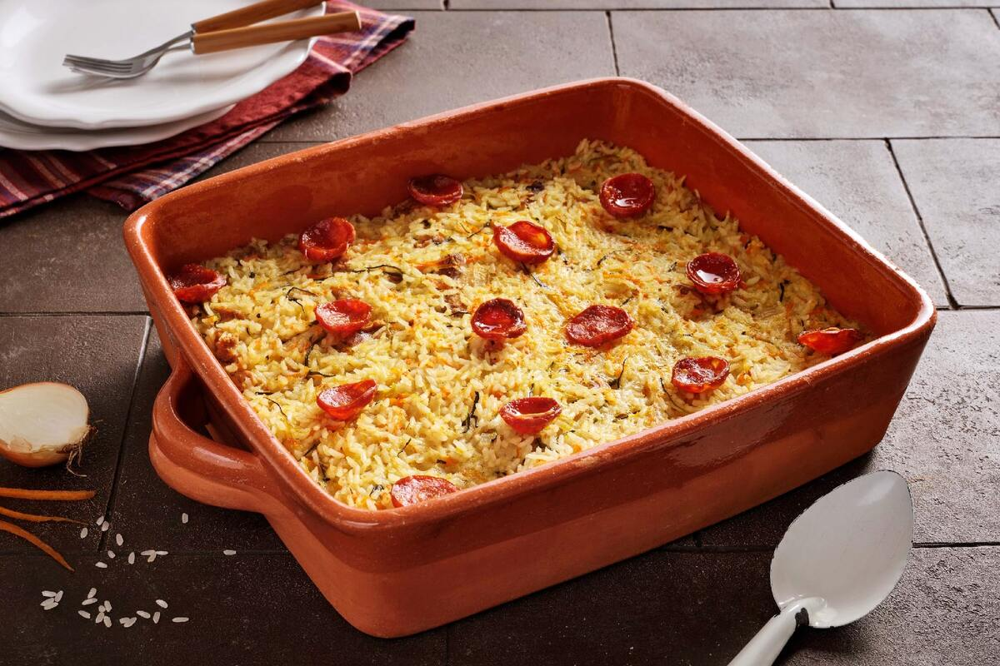

Arroz de Polvo
O Arroz de Polvo é um dos pratos mais emblemáticos da culinária portuguesa, especialmente apreciado nas regiões litorâneas, como Lisboa e o Norte do país. Preparado com arroz agulha ou carolino,
polvo fresco cuidadosamente cozido, vinho branco, tomate, cebola, alho, azeite e ervas aromáticas como coentros ou salsa, este prato entrega um sabor intenso e marcante. Com textura cremosa e caldo
bem apurado, o Arroz de Polvo é frequentemente servido em ocasiões especiais e almoços de domingo em família, sendo uma verdadeira celebração dos sabores do mar e da tradição gastronômica portuguesa.
Jardineira
A Jardineira é um prato típico e reconfortante da culinária portuguesa, conhecido por sua combinação saborosa de carne (geralmente de vaca ou porco),
enchidos (como chouriço), batatas, cenouras, ervilhas e outros legumes frescos. Tudo é cozido lentamente em um caldo aromático com azeite, alho, cebola,
louro e vinho branco, resultando em uma refeição rica, nutritiva e cheia de sabor. Tradicionalmente preparada em ambientes familiares, a Jardineira reflete
a forte ligação de Portugal com a terra e a valorização de ingredientes frescos da agricultura local.
Coelho á Caçador
O Coelho à Caçador é um prato tradicional da culinária portuguesa, especialmente popular nas regiões rurais. Feito com pedaços de coelho marinados em vinho,
alho, louro e especiarias, o prato é cozido lentamente com cebolas, cenouras e batatas, resultando em uma refeição suculenta e cheia de sabor.
É frequentemente servido com arroz ou pão para acompanhar o molho rico e aromático. O Coelho à Caçador é uma verdadeira iguaria que reflete a tradição
gastronômica portuguesa e a valorização dos ingredientes locais.
Bifanas de Porco
As Bifanas de Porco são um prato icônico da culinária portuguesa, especialmente popular em festas e eventos. Feitas com fatias finas de carne de porco marinadas em alho,
louro, pimentão e especiarias, as bifanas são grelhadas ou fritas até ficarem suculentas e saborosas. Servidas em pão crocante, muitas vezes acompanhadas de mostarda ou piri-piri,
as bifanas são uma verdadeira delícia que reflete a tradição gastronômica portuguesa e o amor pela comida simples e saborosa.
Arroz de Pato
O Arroz de Pato é um prato tradicional português que combina arroz com carne de pato desfiada, temperado com especiarias e ervas aromáticas.
O prato é cozido lentamente, permitindo que os sabores se misturem e o arroz absorva o caldo rico do pato. Muitas vezes, é finalizado com uma camada de
chouriço ou bacon por cima, que adiciona um toque defumado e crocante. O Arroz de Pato é uma refeição reconfortante e saborosa, frequentemente servida em
ocasiões especiais e almoços de domingo em família.

Feijoada à Transmontana
A Feijoada à Transmontana é um prato robusto e saboroso, típico da região de Trás-os-Montes, no norte de Portugal. Feita com uma variedade de carnes, como
carne de porco, vaca e enchidos, a feijoada é cozida lentamente com feijão, cebolas, alho, uma diversidade de legumes e especiarias, resultando em um prato rico e reconfortante.
É frequentemente servido com arroz branco e couve, e é uma refeição popular em dias frios e em celebrações familiares.
Bacalhau à Lagareiro
O Bacalhau à Lagareiro é um prato tradicional português que destaca o sabor do bacalhau, geralmente assado no forno com batatas, cebolas e alho.
O prato é regado com um generoso fio de azeite e finalizado com azeitonas e coentros, proporcionando uma combinação deliciosa e aromática.
O Bacalhau à Lagareiro é frequentemente servido em ocasiões especiais e é uma verdadeira iguaria da culinária portuguesa.
Bacalhau com Natas
O Bacalhau com Natas é um prato clássico da culinária portuguesa, conhecido por sua combinação cremosa e reconfortante. Feito com bacalhau desfiado, batatas fritas,
cebolas e um molho de natas (creme de leite), o prato é gratinado no forno até ficar dourado e borbulhante. É uma refeição rica e saborosa, frequentemente servida em
ocasiões especiais e almoços de domingo em família.
Bacalhau à Brás
O Bacalhau à Brás é um prato típico da culinária portuguesa, que combina bacalhau desfiado com batatas fritas e ovos mexidos.
O prato é temperado com cebola, alho e azeitonas, resultando em uma refeição saborosa e reconfortante. O Bacalhau à Brás é frequentemente servido como uma opção de prato principal em almoços de domingo e em festas.

Bacalhau Gomes de Sá
O Bacalhau Gomes de Sá é um prato tradicional da culinária portuguesa, originário da cidade do Porto. Feito com bacalhau desfiado, batatas, cebolas e azeitonas,
o prato é cozido lentamente no forno, permitindo que os sabores se misturem e se intensifiquem. É frequentemente servido com um fio de azeite e é uma opção popular
em almoços de domingo e em ocasiões especiais.

Bacalhau com Broa
O Bacalhau com Broa é um prato tradicional da culinária portuguesa, que combina bacalhau desfiado com uma cobertura de broa de milho (pão de milho) esfarelada.
O prato é geralmente assado no forno, permitindo que os sabores se misturem e a broa fique crocante por cima. É uma refeição saborosa e reconfortante, frequentemente servida em
almoços de domingo e em ocasiões especiais.
Bacalhau com Grão
O Bacalhau com Grão é um prato típico da culinária portuguesa, que combina bacalhau desfiado com grão-de-bico, cebola, alho e coentros.
O prato é geralmente cozido lentamente, permitindo que os sabores se misturem e se intensifiquem. É uma refeição saborosa e reconfortante, frequentemente servida em
almoços de domingo e em ocasiões especiais.